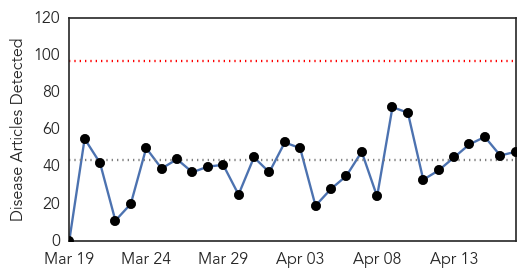
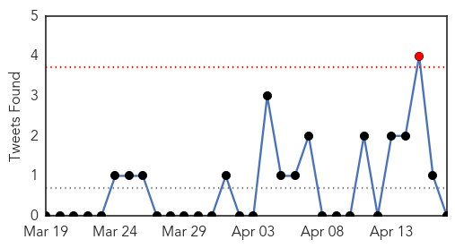
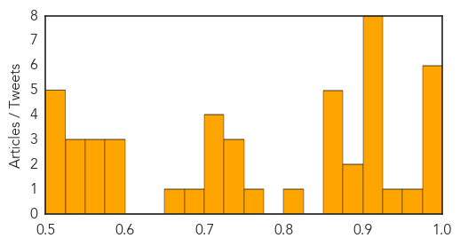
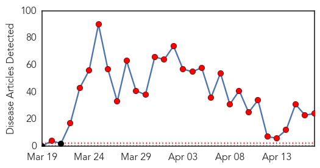

Unknown
30-Day Web Trend
0 alerts, 0 warnings

30-Day Twitter Trend
2 alerts, 0 warnings

Article Locations

Article Confidences
Top Articles:
- 0.999
- Threatwatch: Is the MERS virus spreading its wings?
- 0.995
- Villagers quarantined as first death from Mers virus hits Malaysia
- 0.993
- Philippines asks airline passengers to check for MERS
- 0.992
- Malaysia Quarantines 64 Villagers Over MERS Virus
- 0.983
- Johor quarantines 64 villagers after first MERS death, says report
- 0.976
- Philippines asks over 400 airline passengers to check for MERS
- 0.968
- First SE Asian MERS cases probed
- 0.950
- Polio Hits Equatorial Guinea, Threatens Central Africa
- 0.917
- Chicago Tribune
- 0.917
- Chicago Tribune
- 0.917
- Chicago Tribune
- 0.917
- Chicago Tribune
- 0.917
- Chicago Tribune
- 0.917
- Chicago Tribune
- 0.917
- Chicago Tribune
- 0.917
- Chicago Tribune
- 0.891
- Polio this week - as of 16 April 2014 - Equatorial Guinea
- 0.880
- Social media sites play role in rising syphilis rate in Saskatoon
- 0.866
- China Resources chair under investigation by anti-graft body
- 0.866
- Putin says Ukraine has a month to pay for gas before prepayment
- 0.866
- Moldovan breakaway region should be allowed to choose fate
- 0.866
- Obama: Russia faces consequences for destabilizing Ukraine
- 0.861
- M'sia issues health warning for passengers of Turkish flight on March 29
- 0.820
- Malaysia: Malaysia quarantines 64 villagers over MERS virus
- 0.772
- Deadly viral disease MERS spreads from Middle East to Southeast Asia
- 0.740
- Landi Kotal alarmed at rising Leishmania patients
- 0.729
- 2,300 tubes containing SARS virus samples missing in France — RT News
- 0.725
- Kenya : Fears of worldwide banana shortage as killer fungus spreads
- 0.723
- New MRSA Superbug Emerges in Brazilian Patient
- 0.719
- Wisconsin officials warn producers against intentional PEDV infe
- 0.713
- KBS World Radio
- 0.702
- Sixth-grader at Louisburg Middle School dies of bacterial meningitis
- 0.699
- Durham battling spike in STDs with information
- 0.653
- Ottawa, Saskatchewan fund plan to help keep deadly pig virus out of province
- 0.584
- Salmonella cases dip but overall fight against food poisoning disappointing, officials say
- 0.582
- Malawi Nyasa Times – Malawi breaking news in Malawi
- 0.578
- ‘Task Shifting’ brings Emergency Maternity Care to Burkina Faso Women - Burkina Faso
- 0.563
- Sars Killer Virus Test Tubes Loss 'was Laboratory Malpractice'
- 0.560
- American Samoa schools reopen after pink eye woes
- 0.555
- HealthNewsDigest.com
- 0.546
- North Korea: a challenge for global solidarity
- 0.546
- Outbreak doesn't affect Jefferson Parish officials' support for Children's lease deal
- 0.538
- Nova Scotia proceeds with health board plan
- 0.524
- Norovirus outbreak hits Florida school
- 0.523
- French laboratory loses deadly SARS virus
- 0.516
- Novel stapled peptide nanoparticle combination prevents RSV infection, study finds
- 0.501
- Whistleblower claims some small Adelaide private hospitals are death traps because of lack of critical care
- 0.501
- Number of Americans with Diabetes Tripled in 20 Years, CDC Says
Top Tweets:
- 0.650
- Cerro plantó cara en el Mineirao: Cerro Porteño jugó uno de sus mejores partidos en la Copa Libertadores de Am... http://t.co/Gka69Y5lkj
- 0.627
- RT: Las letras se visten de luto, pero no murió, hoy es el día en que se hará inmortal. [Descanse en paz Gabriel Garcia Márque…
Ebola
30-Day Web Trend
28 alerts, 0 warnings

30-Day Twitter Trend
18 alerts, 0 warnings

Article Locations

Article Confidences

Top Articles:
- 1.000
- West African Ebola outbreak caused by new strain of disease
- 1.000
- Guinea says few new Ebola cases, outbreak nearly under control
- 1.000
- Ebola virus that has caused dozens of deaths in Guinea is new strain
- 1.000
- West Africa Deaths Mount as New Strain is Discovered
- 1.000
- UPDATE 1-West African Ebola outbreak caused by new strain of disease - study
- 1.000
- Ebola virus circulating in Guinea is new strain
- 1.000
- West African Ebola outbreak caused by new strain of disease: study
- 1.000
- Study: Growing Guinea outbreak caused by new Ebola strain
- 1.000
- Guinea says few new Ebola cases, outbreak nearly under control
- 0.999
- Keeping Ebola virus out of Nigeria
- 0.999
- Ebola virus disease, West Africa (Situation as of 16 April 2014) - Guinea
- 0.999
- Guinea says few new Ebola cases, outbreak nearly under control
- 0.998
- West Africa Ebola virus is a new strain
- 0.998
- Ebola Outbreaks Is New Strain of Killer Virus > KAGS TV
- 0.998
- UPDATE 1-West African Ebola outbreak caused by new strain of disease - study
- 0.996
- Guinean Ebola survivor tells of being 'reborn'
- 0.995
- Parliament Summons Health Minister on Ebola Update
- 0.992
- Death toll from Guinea Ebola outbreak rises to 122
- 0.986
- Nigeria At Risk Of Contracting Ebola Virus
- 0.979
- Death toll from Guinea Ebola outbreak rises to 122
- 0.970
- Gambia bans flights from Ebola-hit countries
- 0.965
- New Ebola Strain Causing West Africa Outbreak - Guinea
- 0.954
- Saskatoon woman helping fight Ebola outbreak in Africa - Saskatoon
- 0.583
- Three Britons in custody over hammer attack on UAE women
Top Tweets:
- 0.878
- RT: Twenty-three health care workers in Guinea have been affected with Ebola, incl. 13 deaths AskEbola